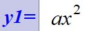
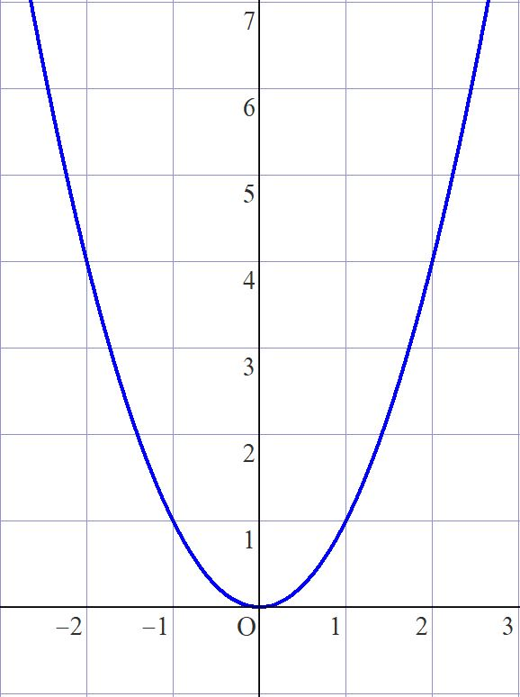
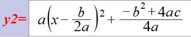
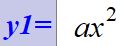
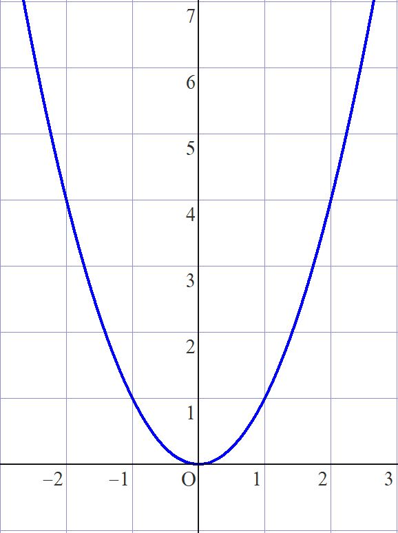
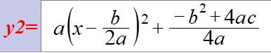
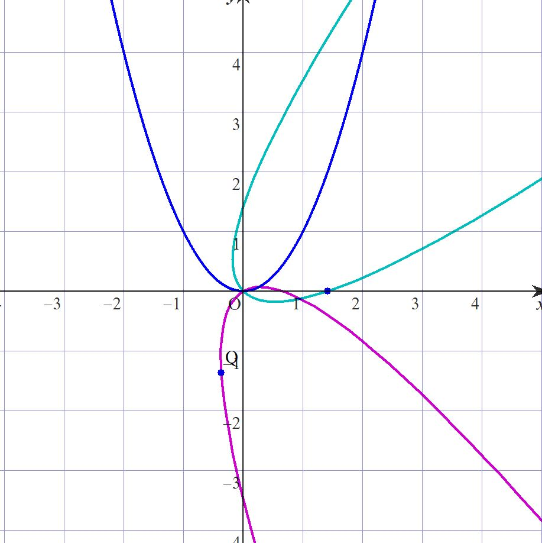
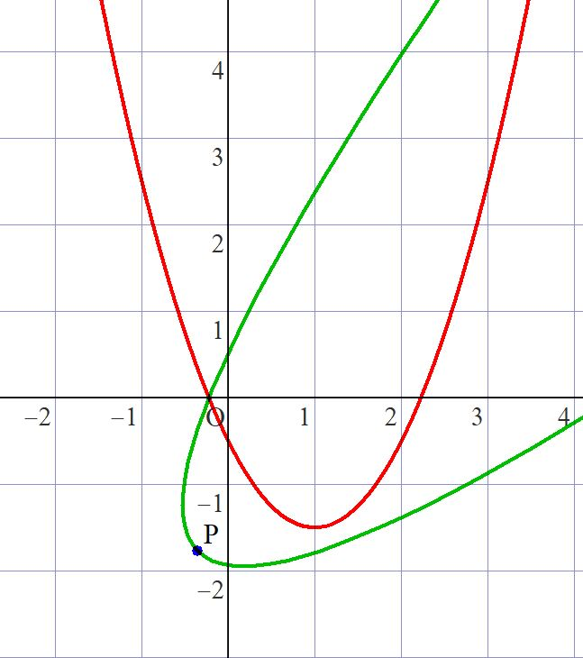
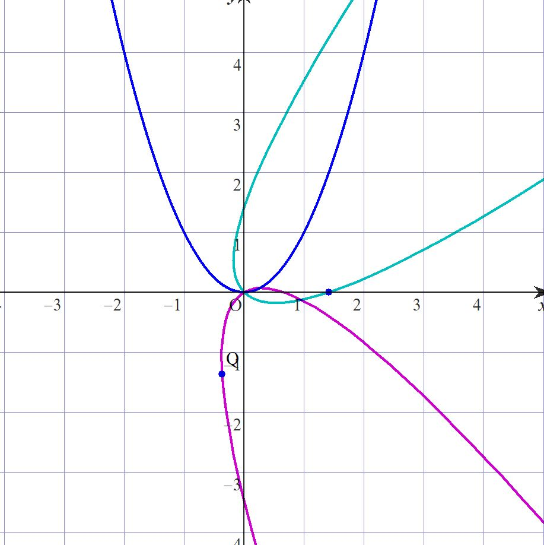
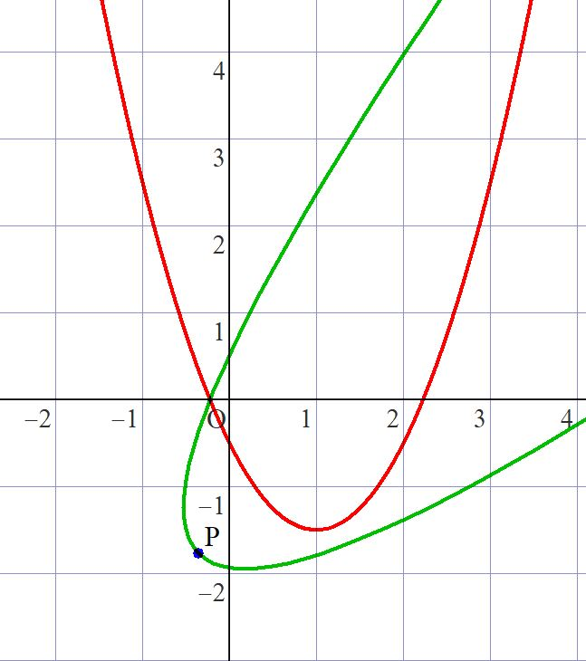

放物線を回転させる
・放物線を回転させたい
中学生のころ数学で新登場する放物線。(世の中は放物線で溢れているが)
中学時代はせいぜいグラフの開き具合と上か下のどちらに凸かぐらいしか調整できない。
 
数Ⅰになると流石に平行移動ぐらいはできるが、

こいつをグルグル回したりすることは出来ない。 さあ、それではどうすれば放物線が回転できるか。
中学時代はせいぜいグラフの開き具合と上か下のどちらに凸かぐらいしか調整できない。
 
数Ⅰになると流石に平行移動ぐらいはできるが、

こいつをグルグル回したりすることは出来ない。 さあ、それではどうすれば放物線が回転できるか。
・放物線を回転させる
ここでは放物線 \( y=x^2 \) を原点を中心として \(β\) rad 回転させることを考えよう。
\(xy\)平面上の任意の点\(P(a,b)\)について、\(a=r \cos α\), \(b=r \sin α\)と表現することが可能で、
点\(P\)を原点を中心として \(β\) rad回転させた点を\(P'(c,d)\)とすると \begin{align} c=r \cos (α+β) \quad かつ \quad d=r \sin (α+β)\\ \end{align} \begin{align} \iff c=r \cos α \cos β - r\sinα \sinβ \quad かつ \quad d=r \sinα \cosβ + r \cosα \sin β\\ \end{align} \begin{align} \iff c=a \cosβ - b \sinβ \quadかつ\quad d=b \cosβ + a \sinβ ・・・①\\ \end{align} 媒介変数を\(t\)としたとき、放物線\(y=x^2\)の媒介変数表示は\((t,t^2)\)なので、 点Pが放物線\(y=x^2\)上にあるとき・・②、\(a=t\) かつ \(b=t^2\)とおけるので、
\begin{align} ① \end{align} \begin{align} \iff c=t \cosβ - t^2 \sinβ \quad かつ \quad d=t^2 \cosβ + t \sinβ \end{align} \begin{align} \iff c=t( \cos β-t \sinβ) \quad かつ \quad d=t(t \cos β+ \sinβ)・・・③ \end{align} ③は点\(P'\)についての媒介変数表示であり、
②のとき、点\(P'\)は放物線 \(y=x^2\)を原点を中心として\(β\) rad回転させた放物線上にあるので、③は求める放物線の媒介変数表示である。
あとはやりたければ自分で\(t\)を消去すれば関係式が出るが、GRAPESでは媒介変数表示の曲線が描けるのでここでは記述しない。(読者に丸投げ)

ここでは\(β=-\frac{π}{4}\)(青緑) ,\(β=\frac{7}{6}π\)(紫)で描いている。あとは平行移動などを駆使して自分の好きな放物線が描ける。
では、\(y=px^2+qx+s\)の時はどうするか。
①において\(y=px^2+qx+s\)のグラフの媒介変数表示は\((t,pt^2+qt+s)\)なので \(a=t\) かつ \(b=pt^2+qt+s\)とすれば、
\begin{align} ① \end{align} \begin{align} \iff c=t \cosβ - (pt^2+qt+s)\sinβ \quad かつ \quad d=(pt^2+qt+s)\cosβ + t\sinβ \end{align} 
赤が\(y=ax^2+bx+c\)で、緑がこれを原点を中心として\(-\frac{π}{4}\) rad回転させたもの。
ほかにも複素数平面や行列を利用する方法もあるのでそれはまたいつか。
\(xy\)平面上の任意の点\(P(a,b)\)について、\(a=r \cos α\), \(b=r \sin α\)と表現することが可能で、
点\(P\)を原点を中心として \(β\) rad回転させた点を\(P'(c,d)\)とすると \begin{align} c=r \cos (α+β) \quad かつ \quad d=r \sin (α+β)\\ \end{align} \begin{align} \iff c=r \cos α \cos β - r\sinα \sinβ \quad かつ \quad d=r \sinα \cosβ + r \cosα \sin β\\ \end{align} \begin{align} \iff c=a \cosβ - b \sinβ \quadかつ\quad d=b \cosβ + a \sinβ ・・・①\\ \end{align} 媒介変数を\(t\)としたとき、放物線\(y=x^2\)の媒介変数表示は\((t,t^2)\)なので、 点Pが放物線\(y=x^2\)上にあるとき・・②、\(a=t\) かつ \(b=t^2\)とおけるので、
\begin{align} ① \end{align} \begin{align} \iff c=t \cosβ - t^2 \sinβ \quad かつ \quad d=t^2 \cosβ + t \sinβ \end{align} \begin{align} \iff c=t( \cos β-t \sinβ) \quad かつ \quad d=t(t \cos β+ \sinβ)・・・③ \end{align} ③は点\(P'\)についての媒介変数表示であり、
②のとき、点\(P'\)は放物線 \(y=x^2\)を原点を中心として\(β\) rad回転させた放物線上にあるので、③は求める放物線の媒介変数表示である。
あとはやりたければ自分で\(t\)を消去すれば関係式が出るが、GRAPESでは媒介変数表示の曲線が描けるのでここでは記述しない。(読者に丸投げ)

ここでは\(β=-\frac{π}{4}\)(青緑) ,\(β=\frac{7}{6}π\)(紫)で描いている。あとは平行移動などを駆使して自分の好きな放物線が描ける。
では、\(y=px^2+qx+s\)の時はどうするか。
①において\(y=px^2+qx+s\)のグラフの媒介変数表示は\((t,pt^2+qt+s)\)なので \(a=t\) かつ \(b=pt^2+qt+s\)とすれば、
\begin{align} ① \end{align} \begin{align} \iff c=t \cosβ - (pt^2+qt+s)\sinβ \quad かつ \quad d=(pt^2+qt+s)\cosβ + t\sinβ \end{align} 
赤が\(y=ax^2+bx+c\)で、緑がこれを原点を中心として\(-\frac{π}{4}\) rad回転させたもの。
ほかにも複素数平面や行列を利用する方法もあるのでそれはまたいつか。
記事作成日:2023/02/10
最終更新日:2024/09/12
執筆:虚時間fλ
最終更新日:2024/09/12
執筆:虚時間fλ